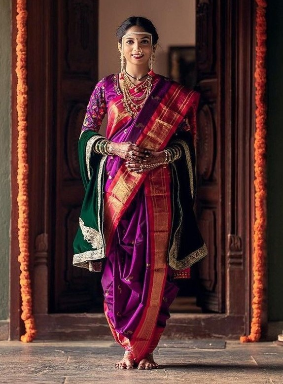
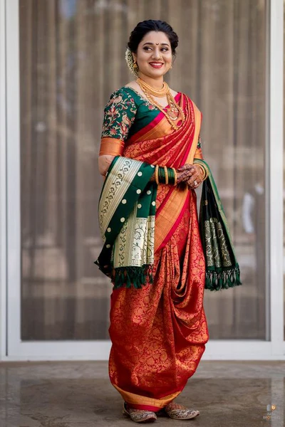

NAUVARI SAREE
- Maharashtra




Nauvari saree is a traditional Maharashtrian saree that was introduced to the world by the weavers of Nauvar, Maharashtra in India. The sarees are woven with pure silk and cotton thread in a fine weave and are often embellished with zari, embroidery, lace, and mirror work. The weavers introduce new fabrics and patterns every year to keep up with the changing times.
Nauvari means "nine-yard" in the Marathi language. The Nauvari Saree is a nine-yard saree with a blouse and petticoat. The Nauvari Saree can be worn on any occasion - be it weddings or festivals.